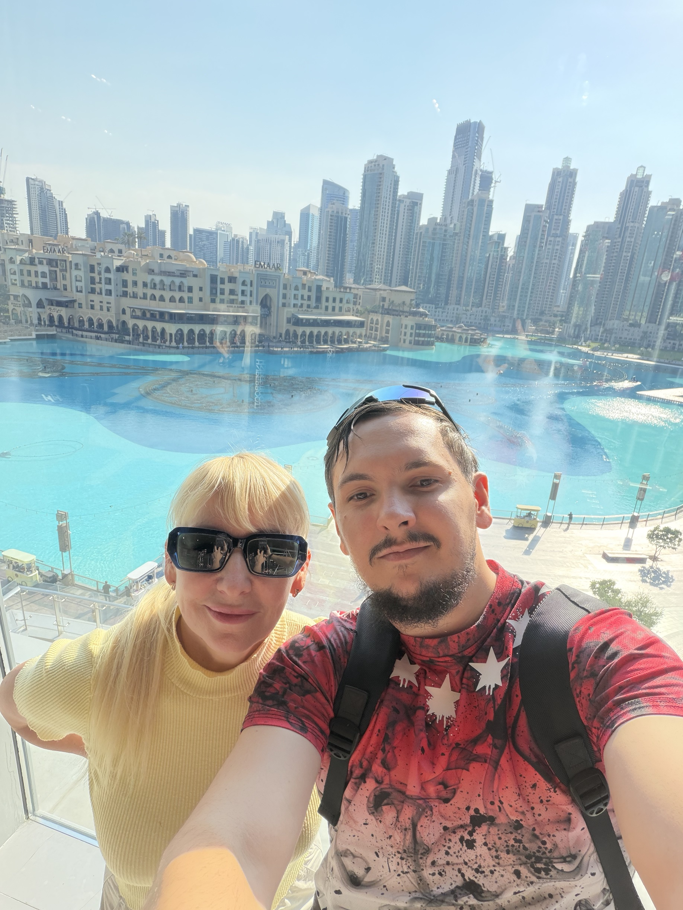
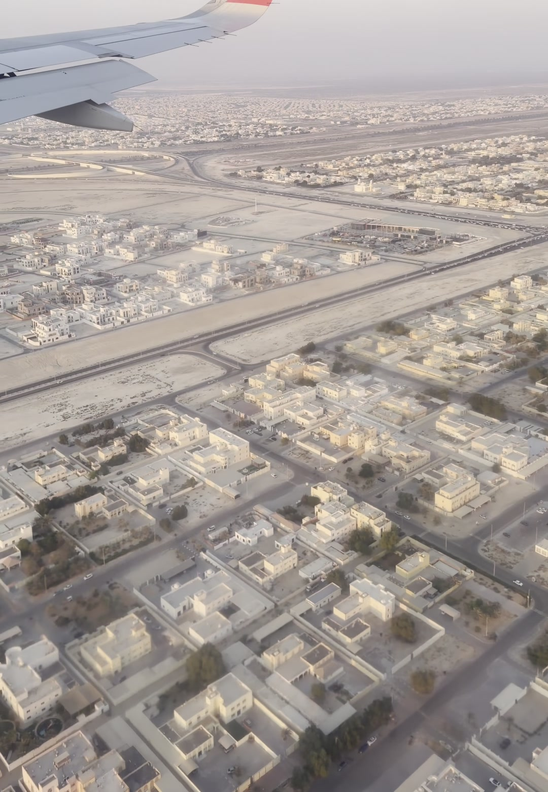
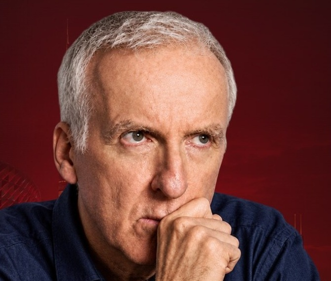
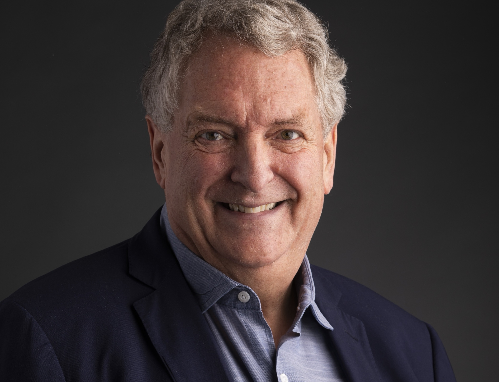
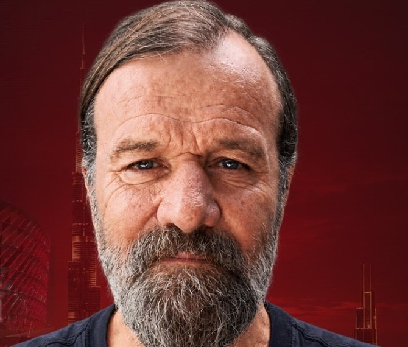
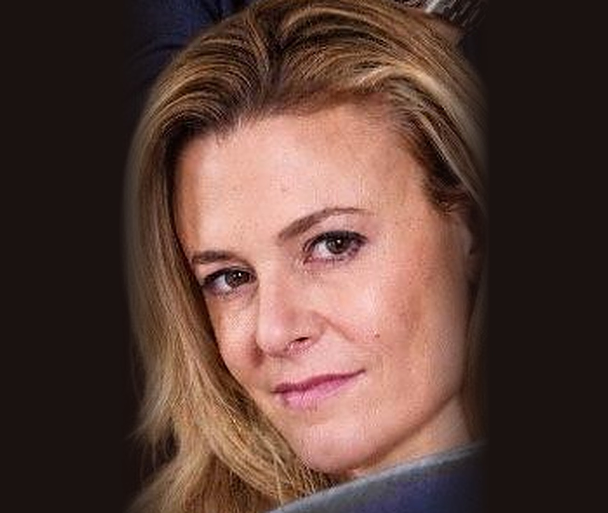
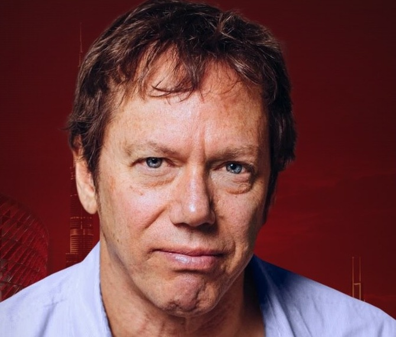

Megacampus SummitDubai
почему
собственники школы
летят учиться
20–21 ноября · Coca-Cola Arena
в эти выходные02
мы с Женей едем в Дубай на Megacampus Summit — один из крупнейших в мире образовательных форумов для предпринимателей и руководителей

нас часто спрашивают: зачем?03
школа работает,
команда сильная,
дети учатся
ответ простой
школа не может расти быстрее, чем растут её руководители
про честность04
мы каждый день просим детей учиться, пробовать новое, не бояться сложного
было бы нечестно требовать этого от них — и при этом самим стоять на месте
кого мы едем слушать1 / 5

Джеймс Кэмерон
режиссёр «Титаника» и «Аватара»
о том, как воображение превращается в реальные проекты. «Титаник» и «Аватар» когда-то тоже были просто идеей, в которую никто, кроме автора, не верил
кого мы едем слушать2 / 5

Дэйв Ульрих
эксперт по лидерству и развитию талантов
для нас это ключевая тема: сильная школа — это прежде всего сильная команда педагогов и кураторов
кого мы едем слушать3 / 5

Вим Хоф
тело, стресс, состояние
о том, как управлять своим телом, стрессом и состоянием. это то, чему нам важно учить и детей
кого мы едем слушать4 / 5

Тали Шарот
нейробиолог
изучает, как мозг принимает решения и что на самом деле мотивирует человека меняться
кого мы едем слушать5 / 5

Роберт Грин
автор книг о стратегии
о стратегии и о том, как думать на несколько шагов вперёд
что из этого получат наши ученики?10
мир меняется так быстро, что знания, полученные пять лет назад, уже не работают
чтобы готовить детей к поступлению в лучшие университеты мира, мы сами должны понимать, куда движется этот мир
что мы привезём11
всё, что мы привезём, превратится в конкретные решения:
— как мы обучаем кураторов
— как мотивируем учеников
— как выстраиваем команду
сильная команда взрослых — это всегда лучший результат для детей
расскажем, что узнали. следите за новостями